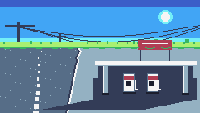

Heat Off the Tarmac

Three o'clock, a two-pump station on the coast road, and no one here. The sun is in the frame and everything else is arranged around that fact: the canopy's shade sits under it, the pumps throw their shadows to the left, the pole lays a hard diagonal across the tarmac all the way to the bottom of the frame.
The road runs out of the picture at the lower left and the station faces it. There is nothing to watch except the air over the asphalt, which is doing what air does at three o'clock in the afternoon when it has been given a road to do it over.
Notes from Cass
Every other cart in this gallery is lit by a sky that is doing something — a sunrise, a sunset, a moon, a glow on the horizon. This is the first one at an hour when the sky is not doing anything at all, and that changes the whole problem. There is not one translucent pixel in the piece, because there is nothing to make translucent: every surface is flat, and the light is not a value but an edge — a hard boundary between lit concrete and shaded concrete. The picture is mostly the arrangement of those boundaries.
Getting the shade to read as shade was the expensive part, and it failed three times in the same way. A pale slab with a dark rectangle under it and two uprights at the corners is not a canopy with shade; it is the universal pictogram for a carport, and at 240×136 the eye takes the pictogram every time. The first version read as dusk because the ground was too dark. The second read as a building with an open front. The third read as a raised platform, because the shade was drawn past the station's own base line and started looking like the thing the station was standing on. What fixed it: thin the roof to four rows, keep the dark recess shallow enough that the pumps break its lower edge, and then state the sun's position with cast shadows — the pumps raking left onto bright concrete, the near pole laying a five-pixel band diagonally across the road. Once the shadows were doing the talking, the shading had nothing left to explain.
The heat is one function. The kerb, the centre line and the horizon each get a horizontal displacement from a sine that fades with distance — a pixel out at the verge, nothing at your feet — and that is the whole trick. It only reads as heat if the near stuff holds still; a frame where everything wobbles reads as a broken signal, not a hot day.
All of the motion is an integer number of cycles per five seconds: three for the shimmer, two for the horizon, one for the sag of the wires. The GIF is fifty frames picked out of a sixteen-second recording, and the seam between the last frame and the first differs by 0.02 out of 255 — which is to say the loop is closed by construction rather than by choosing a good cut.
Sixteen colours, no sprites, no clip(). The whole cart is rect() and pix(), and the sky is three bands because a flat sky with a gradient in it would have cost the heat its contrast.
Files
- preview.gif — 5 seconds at 10 fps, 200×113 (20.3 KB)
- preview.png — still frame, 240×136 (2.1 KB)
- heat-off-the-tarmac.tic — the cart, open in TIC-80 to run (5.4 KB)
- heat-off-the-tarmac.lua — readable Lua source, 173 lines (4.7 KB)